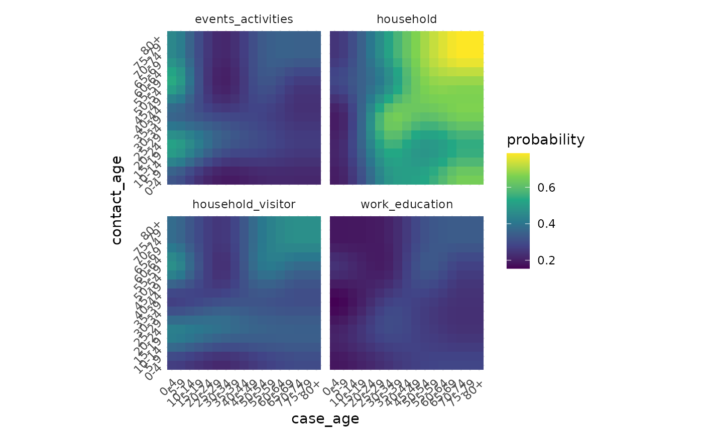

Data Sources
data-sources.RmdWe provide access to a variety of different data sources in
conmat. Most of these are centred around Australian data,
as the package was initially created for disease modelling work in
Australia. The aim of this vignette is to give a quick tour of the data
sources available in conmat.
library(conmat)World data
We provide functions to clean up world population data from
socialmixr.
world_data <- socialmixr::wpp_age()
head(world_data)
#> country lower.age.limit year population
#> 1 AFRICA 0 1950 38705049
#> 2 AFRICA 0 1955 44304214
#> 3 AFRICA 0 1960 50491493
#> 4 AFRICA 0 1965 57690110
#> 5 AFRICA 0 1970 65452837
#> 6 AFRICA 0 1975 75017430We can tidy the data up, filtering down to a specified location and
year with the age_population function:
nz_2015 <- age_population(
data = world_data,
location_col = country,
location = "New Zealand",
age_col = lower.age.limit,
year_col = year,
year = 2015
)
nz_2015
#> # A tibble: 21 × 5 (conmat_population)
#> - age: lower.age.limit
#> - population: population
#> country year population lower.age.limit upper.age.limit
#> <chr> <int> <dbl> <dbl> <dbl>
#> 1 New Zealand 2015 308681 0 4
#> 2 New Zealand 2015 315632 5 9
#> 3 New Zealand 2015 297247 10 14
#> 4 New Zealand 2015 318932 15 19
#> 5 New Zealand 2015 339362 20 24
#> 6 New Zealand 2015 315914 25 29
#> 7 New Zealand 2015 287537 30 34
#> 8 New Zealand 2015 273539 35 39
#> 9 New Zealand 2015 312245 40 44
#> 10 New Zealand 2015 313312 45 49
#> # … with 11 more rowsThis returns a conmat_population object, which is a data
frame that knows which columns represent age and
population information. This is useful for other modelling
parts of the conmat package.
Australian Bureau of Statistics (ABS) data
Accessing Functions
We provide two functions to access LGA (Local Government Area), and
state level population age data, which are provided in 5 year age bins
from 0, 5, up to 85+. These data are conmat_population
tibbles, which means that they know which columns represent the
age and population information. This means
that functions inside of conmat can work a bit smoother as
we refer to these columns frequently.
abs_age_lga()
fairfield <- abs_age_lga(lga_name = "Fairfield (C)")
fairfield
#> # A tibble: 18 × 4 (conmat_population)
#> - age: lower.age.limit
#> - population: population
#> lga lower.age.limit year population
#> <chr> <dbl> <dbl> <dbl>
#> 1 Fairfield (C) 0 2020 12261
#> 2 Fairfield (C) 5 2020 13093
#> 3 Fairfield (C) 10 2020 13602
#> 4 Fairfield (C) 15 2020 14323
#> 5 Fairfield (C) 20 2020 15932
#> 6 Fairfield (C) 25 2020 16190
#> 7 Fairfield (C) 30 2020 14134
#> 8 Fairfield (C) 35 2020 13034
#> 9 Fairfield (C) 40 2020 12217
#> 10 Fairfield (C) 45 2020 13449
#> 11 Fairfield (C) 50 2020 13419
#> 12 Fairfield (C) 55 2020 13652
#> 13 Fairfield (C) 60 2020 12907
#> 14 Fairfield (C) 65 2020 10541
#> 15 Fairfield (C) 70 2020 8227
#> 16 Fairfield (C) 75 2020 5598
#> 17 Fairfield (C) 80 2020 4006
#> 18 Fairfield (C) 85 2020 4240Note that this is a conmat_population object, which
prints in red at the top of the data frame. This provides the
information on the age and population columns,
stating: age: lower.age.limit, and
population: population, indicating which columns refer to
the appropriate variables.
Also note that abs_age_lga requires you to know the
exact name of the LGA, you can see them in the dataset,
abs_lga_lookup
abs_lga_lookup
#> # A tibble: 544 × 3
#> state lga_code lga
#> <chr> <dbl> <chr>
#> 1 NSW 10050 Albury (C)
#> 2 NSW 10180 Armidale Regional (A)
#> 3 NSW 10250 Ballina (A)
#> 4 NSW 10300 Balranald (A)
#> 5 NSW 10470 Bathurst Regional (A)
#> 6 NSW 10500 Bayside (A)
#> 7 NSW 10550 Bega Valley (A)
#> 8 NSW 10600 Bellingen (A)
#> 9 NSW 10650 Berrigan (A)
#> 10 NSW 10750 Blacktown (C)
#> # … with 534 more rowsAnd if you’re not sure about a particular name of a place, you can
use agrep and filter, to match on similar-ish
characters, like so:
library(dplyr)
#>
#> Attaching package: 'dplyr'
#> The following objects are masked from 'package:stats':
#>
#> filter, lag
#> The following objects are masked from 'package:base':
#>
#> intersect, setdiff, setequal, union
abs_lga_lookup %>%
filter(agrepl("Sydney", lga))
#> # A tibble: 2 × 3
#> state lga_code lga
#> <chr> <dbl> <chr>
#> 1 NSW 15950 North Sydney (A)
#> 2 NSW 17200 Sydney (C)
abs_age_state()
This takes in the abbreviated state names, and is also a
conmat_population object.
abs_age_state(state_name = "NSW")
#> # A tibble: 18 × 4 (conmat_population)
#> - age: lower.age.limit
#> - population: population
#> year state lower.age.limit population
#> <dbl> <chr> <dbl> <dbl>
#> 1 2020 NSW 0 495091
#> 2 2020 NSW 5 512778
#> 3 2020 NSW 10 500881
#> 4 2020 NSW 15 468550
#> 5 2020 NSW 20 540233
#> 6 2020 NSW 25 607891
#> 7 2020 NSW 30 611590
#> 8 2020 NSW 35 582824
#> 9 2020 NSW 40 512803
#> 10 2020 NSW 45 527098
#> 11 2020 NSW 50 484708
#> 12 2020 NSW 55 495116
#> 13 2020 NSW 60 461329
#> 14 2020 NSW 65 404034
#> 15 2020 NSW 70 355280
#> 16 2020 NSW 75 253241
#> 17 2020 NSW 80 174990
#> 18 2020 NSW 85 179095You can see these state names with:
unique(abs_lga_lookup$state)
#> [1] "NSW" "VIC" "QLD" "SA" "WA" "TAS" "NT" "ACT" "OT"Note that “OT” stands for “other territories”
ABS data
We provide other ABS data, listed now. You can read the full details
of the data at their respective helpfiles, by writing, for example,
?abs_education_state.
Education by state data for 2006 -2020
abs_education_state
#> # A tibble: 4,194 × 5
#> year state aboriginal_and_torres_strait_islander_status age n_full_and_p…¹
#> <dbl> <chr> <chr> <dbl> <dbl>
#> 1 2006 ACT Aboriginal and Torres Strait Islander 4 5
#> 2 2006 ACT Non-Indigenous 4 109
#> 3 2006 NSW Aboriginal and Torres Strait Islander 4 104
#> 4 2006 NSW Non-Indigenous 4 1870
#> 5 2006 NT Aboriginal and Torres Strait Islander 4 102
#> 6 2006 NT Non-Indigenous 4 63
#> 7 2006 QLD Aboriginal and Torres Strait Islander 4 37
#> 8 2006 QLD Non-Indigenous 4 740
#> 9 2006 SA Aboriginal and Torres Strait Islander 4 42
#> 10 2006 SA Non-Indigenous 4 1023
#> # … with 4,184 more rows, and abbreviated variable name ¹n_full_and_part_timeEducation by state data for 2020
abs_education_state_2020
#> # A tibble: 808 × 6
#> year state age population population_interpolated prop
#> <dbl> <chr> <dbl> <dbl> <dbl> <dbl>
#> 1 2020 ACT 0 0 5569. 0
#> 2 2020 ACT 1 0 5702. 0
#> 3 2020 ACT 2 0 5781. 0
#> 4 2020 ACT 3 0 5814. 0
#> 5 2020 ACT 4 0 5809. 0
#> 6 2020 ACT 5 4558 5772. 0.790
#> 7 2020 ACT 6 6161 5710. 1.08
#> 8 2020 ACT 7 6163 5623. 1.10
#> 9 2020 ACT 8 5881 5510. 1.07
#> 10 2020 ACT 9 5921 5370. 1.10
#> # … with 798 more rowsEmployment by LGA for 2016
abs_employ_age_lga
#> # A tibble: 5,600 × 8
#> year state lga age_group total_emp…¹ total…² total…³ total
#> <dbl> <chr> <chr> <fct> <dbl> <dbl> <dbl> <dbl>
#> 1 2016 NSW Albury (C) 15-19 1527 300 1830 3248
#> 2 2016 NSW Armidale Regional (A) 15-19 838 217 1055 2560
#> 3 2016 NSW Ballina (A) 15-19 1064 185 1255 2384
#> 4 2016 NSW Balranald (A) 15-19 41 9 46 135
#> 5 2016 NSW Bathurst Regional (A) 15-19 1103 241 1341 2980
#> 6 2016 NSW Bega Valley (A) 15-19 801 97 897 1792
#> 7 2016 NSW Bellingen (A) 15-19 241 42 281 719
#> 8 2016 NSW Berrigan (A) 15-19 168 16 181 421
#> 9 2016 NSW Blacktown (C) 15-19 7534 2136 9670 23289
#> 10 2016 NSW Bland (A) 15-19 124 14 140 333
#> # … with 5,590 more rows, and abbreviated variable names ¹total_employed,
#> # ²total_unemployed, ³total_labour_forceNumber of people in each household by LGA for 2016
abs_household_lga
#> # A tibble: 4,968 × 5
#> year state lga n_persons_usually_resident n_households
#> <dbl> <chr> <chr> <chr> <dbl>
#> 1 2016 NSW Albury (C) total 19495
#> 2 2016 NSW Albury (C) 1 6020
#> 3 2016 NSW Albury (C) 2 6738
#> 4 2016 NSW Albury (C) 3 2740
#> 5 2016 NSW Albury (C) 4 2541
#> 6 2016 NSW Albury (C) 5 1041
#> 7 2016 NSW Albury (C) 6 311
#> 8 2016 NSW Albury (C) 7 56
#> 9 2016 NSW Albury (C) 8+ 42
#> 10 2016 NSW Armidale Regional (A) total 10276
#> # … with 4,958 more rowsLGA age population for 2016 for all states and LGAs
abs_pop_age_lga_2016
#> # A tibble: 9,792 × 5
#> year state lga age_group population
#> <dbl> <chr> <chr> <fct> <dbl>
#> 1 2016 ACT Unincorporated ACT 0-4 28054
#> 2 2016 ACT Unincorporated ACT 5-9 25767
#> 3 2016 ACT Unincorporated ACT 10-14 22170
#> 4 2016 ACT Unincorporated ACT 15-19 24906
#> 5 2016 ACT Unincorporated ACT 20-24 32615
#> 6 2016 ACT Unincorporated ACT 25-29 34243
#> 7 2016 ACT Unincorporated ACT 30-34 34574
#> 8 2016 ACT Unincorporated ACT 35-39 30340
#> 9 2016 ACT Unincorporated ACT 40-44 28387
#> 10 2016 ACT Unincorporated ACT 45-49 26431
#> # … with 9,782 more rowsLGA age population for 2020 for all states and LGAs
abs_pop_age_lga_2020
#> # A tibble: 9,774 × 5
#> year state lga age_group population
#> <dbl> <chr> <chr> <fct> <dbl>
#> 1 2020 ACT Unincorporated ACT 0-4 27861
#> 2 2020 ACT Unincorporated ACT 5-9 28871
#> 3 2020 ACT Unincorporated ACT 10-14 26015
#> 4 2020 ACT Unincorporated ACT 15-19 23867
#> 5 2020 ACT Unincorporated ACT 20-24 32626
#> 6 2020 ACT Unincorporated ACT 25-29 33992
#> 7 2020 ACT Unincorporated ACT 30-34 35734
#> 8 2020 ACT Unincorporated ACT 35-39 35354
#> 9 2020 ACT Unincorporated ACT 40-44 30155
#> 10 2020 ACT Unincorporated ACT 45-49 29103
#> # … with 9,764 more rowsState age population for 2020
abs_state_age
#> # A tibble: 168 × 3
#> state age_group population
#> <chr> <fct> <dbl>
#> 1 NSW 0-4 495060
#> 2 VIC 0-4 401992
#> 3 QLD 0-4 314592
#> 4 SA 0-4 98400
#> 5 WA 0-4 171531
#> 6 TAS 0-4 29258
#> 7 NT 0-4 17766
#> 8 ACT 0-4 27846
#> 9 NSW 5-9 512687
#> 10 VIC 5-9 416633
#> # … with 158 more rowsEpidemiology / disease modelling data
Transmission probabilities from Eyre
A dataset containing data digitised from “The impact of SARS-CoV-2 vaccination on Alpha & Delta variant transmission”, by David W Eyre, Donald Taylor, Mark Purver, David Chapman, Tom Fowler, Koen B Pouwels, A Sarah Walker, Tim EA Peto
eyre_transmission_probabilities
#> # A tibble: 40,804 × 6
#> setting case_age contact_age case_age_5y contact_age_5y probability
#> <chr> <int> <int> <chr> <chr> <dbl>
#> 1 household 0 0 0-4 0-4 0.195
#> 2 household 0 1 0-4 0-4 0.195
#> 3 household 0 2 0-4 0-4 0.195
#> 4 household 0 3 0-4 0-4 0.195
#> 5 household 0 4 0-4 0-4 0.195
#> 6 household 0 5 0-4 5-9 0.196
#> 7 household 0 6 0-4 5-9 0.198
#> 8 household 0 7 0-4 5-9 0.198
#> 9 household 0 8 0-4 5-9 0.199
#> 10 household 0 9 0-4 5-9 0.201
#> # … with 40,794 more rowsWe can visualise the data like so:
library(ggplot2)
library(stringr)
library(dplyr)
eyre_transmission_probabilities %>%
group_by(
setting,
case_age_5y,
contact_age_5y
) %>%
summarise(
across(
probability,
mean
),
.groups = "drop"
) %>%
rename(
case_age = case_age_5y,
contact_age = contact_age_5y
) %>%
mutate(
across(
ends_with("age"),
~ factor(.x,
levels = str_sort(
unique(.x),
numeric = TRUE
)
)
)
) %>%
ggplot(
aes(
x = case_age,
y = contact_age,
fill = probability
)
) +
facet_wrap(~setting) +
geom_tile() +
scale_fill_viridis_c() +
coord_fixed() +
theme_minimal() +
theme(
axis.text = element_text(angle = 45, hjust = 1)
)